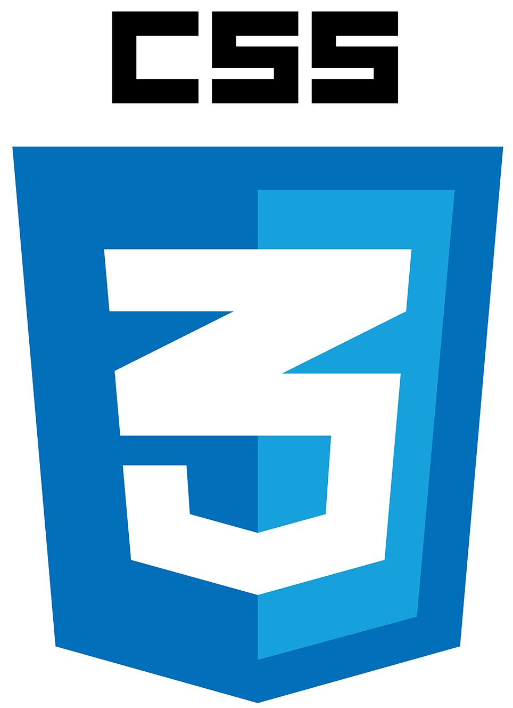
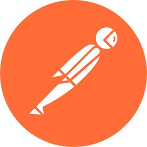
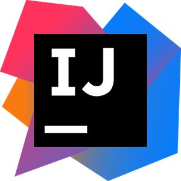
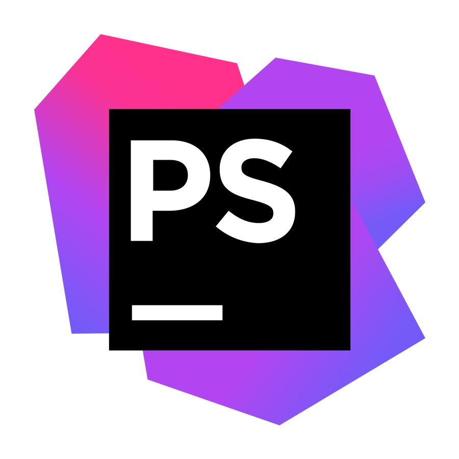

Profil
À propos de moi
Actuellement en deuxième année de BTS Services Informatiques aux Organisations – option SLAM à l’ORT Daniel Mayer, je suis à la recherche d’un stage du 5 janvier au 6 février 2026.
Au cours de ma formation, j’ai travaillé sur la programmation (Java, PHP, SQL), la conception de bases de données (UML, Merise) et l’utilisation d’outils collaboratifs comme GitHub, Postman et VS Code. Mon dernier stage chez SCOR m’a permis de découvrir le déploiement d’applications SaaS et Azure, la documentation technique et le travail en mode projet dans un contexte international.
Curieuse, rigoureuse et à l’écoute, j’aime comprendre le besoin des utilisateurs pour proposer des solutions simples, fiables et bien documentées.
Compétences
Langages

HTML

CSS
PHP

JAVA
SQL
Outils

GitHub / Git

VS Code

Postman

IntelliJ IDEA

PhpStorm
Soft skills
- Rigueur & organisation
- Curiosité
- Adaptabilité
- Esprit d’équipe
Langues
- Français : langue maternelle
- Anglais : niveau B1